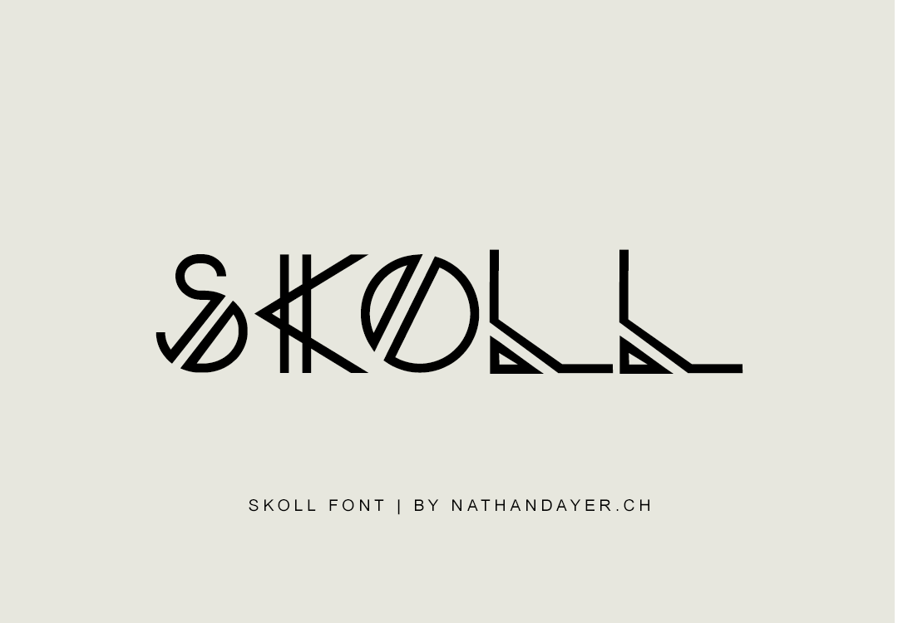
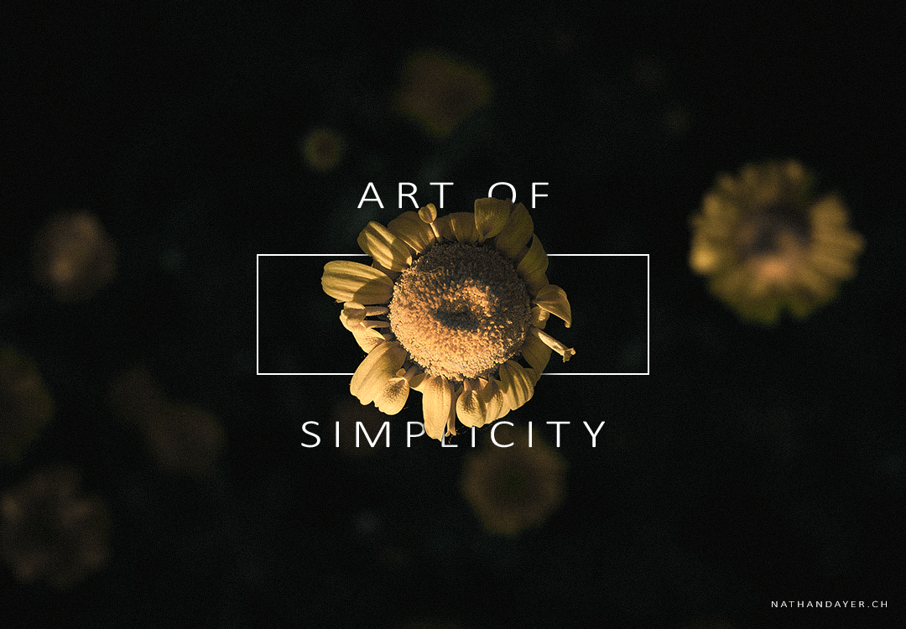

TYPO

J'ai eu l'occasion de créer des polices, comme celle de SKOLL. La typographie est un élément très important en graphisme. Au delà de savoir créer un police j'ai appris à utiliser et à jouer avec les différentes polices qui exsistent.
PHOTOS

La photographie est un élément important à maîtriser pour pouvoir raconter une histoire. Il s'agit réellement de l'élément le plus important pour pouvoir mettre un concept en images. J'ai eu l'occasion durant mon projet SKOLL d'en faire en studio comme en extérieur.
PHOTOS
MINIMALISME

« Le minimalisme a une nature poétique, en ce sens qu’il touche l’équilibre entre le plein et le vide. »
Jennie C. Jones
VIDEO
Les vidéos ont aussi une place importante aujourd'hui sur les résaux sociaux. Je me suis donc aussi formée au montage vidéo sous ces différentes formes et tendances. J'ai appris à utiliser PremierePro ou d'autres logiciels. Vous pouvez aller voir quelques vidéos que j'ai filmées et montées ici.